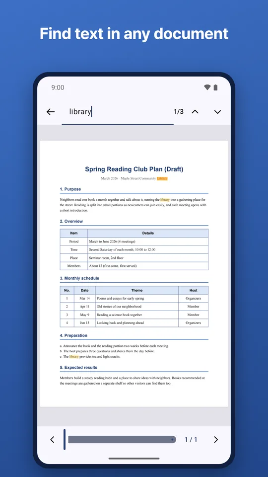

PeriDoc: قارئ PDF وعارض HWP
افتح ملفات HWP وPDF ووورد وإكسل وباوربوينت دون إنترنت. سريع وخفيف وخاص.
Google Play



PeriDoc عارض مستندات سريع ومجاني وآمن لأجهزة Android. افتح ملفات HWP وHWPX وPDF ووورد (DOCX) وإكسل (XLSX) وباوربوينت (PPTX) مباشرة على هاتفك أو جهازك اللوحي. لا حاجة إلى حساب، ولا تُرفع ملفاتك أبدًا.
عارض HWP وHWPX
هل تحتاج إلى فتح ملفات HWP وصلتك من مدرسة أو شركة أو جهة حكومية في كوريا؟ يفتح PeriDoc مستندات معالج النصوص الكوري هانغول (HWP وHWPX وHWP 3.0 وHML) المنشأة ببرنامج Hancom Office، مع الحفاظ على الجداول والصور وتخطيط الصفحات. الخطوط الكورية مدمجة في التطبيق ليظهر النص بشكل صحيح، ويمكنك أيضًا استيراد خطوطك من الكمبيوتر لمطابقة أقرب إلى الأصل.
قارئ PDF
اقرأ ملفات PDF بسلاسة مع دعم البحث في النص وتحديده ونسخه، وجدول المحتويات، والصور المصغرة للصفحات، وملفات PDF المحمية بكلمة مرور.
عارض مستندات Office
اعرض بسهولة مستندات وورد (DOCX) وجداول إكسل (XLSX) وعروض باوربوينت (PPTX) دون تثبيت حزم مكتبية ثقيلة.
البحث داخل مستنداتك (مع OCR)
ابحث عن النص داخل مستنداتك، لا في أسماء الملفات فقط. يفهرس PeriDoc الملفات الموجودة على جهازك، فيُظهر البحث فورًا الملف والصفحة التي تحتوي على ما تبحث عنه. ويتم التعرّف على النص في ملفات PDF الممسوحة ضوئيًا والصور على جهازك فقط (OCR)، ثم يُضاف إلى نتائج البحث.
البحث الذكي (اختياري)
لا تتذكر الكلمات بدقة؟ يفهم البحث الذكي السياق والمعنى ليعثر على المستندات ذات الصلة والمشاهد داخل صورك. نزِّل النموذج مرة واحدة (نحو 388 MB)، ومن بعدها تبقى كل المعالجة على جهازك دون الحاجة إلى الإنترنت.
بطاقات المواعيد النهائية
افتح إعلانًا أو تعميمًا، وسيعثر PeriDoc على التواريخ المُسمّاة مثل فترات التقديم والمواعيد النهائية وأوقات الفعاليات، ويعرضها فوق المستند مع عدّ تنازلي. اضغط لإضافة موعد إلى التقويم أو الاتصال برقم التواصل. يعمل مع التواريخ في المستندات المكتوبة بالكورية والإنجليزية.
البحث باستخدام صورة (مع البحث الذكي)
استخدم صورة واحدة للعثور على صور مشابهة، أو التقط صورة لصفحة مطبوعة للعثور على الملف الأصلي على جهازك.
مقارنة الإصدارات وتنظيف الملفات المكررة
يجمع PeriDoc إصدارات المستند نفسه، مثل «تقرير_final» و«تقرير_v2»، ويُبرز مباشرةً على الصفحة ما تم تغييره أو إضافته أو حذفه بين إصدارين. وعلى الشاشة العريضة، يمكنك رؤية الإصدارين جنبًا إلى جنب. اعثر على الملفات المتطابقة وانقل النسخ الزائدة إلى المهملات.
مُحسَّن للأجهزة القابلة للطي والأجهزة اللوحية
أمسك Galaxy Tab، أو Galaxy Fold بعد فتحه، بالوضع الأفقي لترى قائمة الملفات والمستند جنبًا إلى جنب. وفي وضع Flex (عند طي الجهاز إلى النصف)، يبقى المستند في النصف العلوي وتكون أزرار التنقل بين الصفحات في النصف السفلي لسهولة الاستخدام. ويدعم التطبيق اختصارات لوحة المفاتيح (مثل Ctrl+F) والتمرير بعجلة الماوس.
أنواع ملفات أخرى مدعومة
النصوص (TXT) وMarkdown (MD) وCSV وHTML والصور (JPG وPNG وWebP وHEIC وGIF وBMP).
الميزات
- عرض صفحة واحدة أو تمرير متواصل، وصفحتان جنبًا إلى جنب في الوضع الأفقي، والتكبير بإصبعين
- البحث داخل المستندات، وتحديد النص ونسخه، ونسخ الجداول بصيغة CSV
- التنقل بسهولة عبر جدول المحتويات والصور المصغرة للصفحات، ومتابعة القراءة من حيث توقفت
- عمليات البحث الأخيرة، وعرض كل المطابقات في المستند بنظرة واحدة، واختصار أيقونة التطبيق للبحث السريع
- تدوير الصفحات، وحفظ الصفحة كصورة، والحفظ بصيغة PDF، والمشاركة أو الفتح في تطبيق آخر
- مدير ملفات مدمج يعثر على كل المستندات في جهازك، مع مجلد المهملات واختصارات على الشاشة الرئيسية
- اجعله تطبيقك الافتراضي لفتح المرفقات فورًا من Gmail وتطبيقات المراسلة ومجلد التنزيلات ومديري الملفات
- خطوط كورية مدمجة وإمكانية استيراد خطوطك الخاصة من الكمبيوتر
الخصوصية والعمل دون إنترنت
- لا يرفع PeriDoc مستنداتك ولا يرسلها إلى أي مكان، والجزء الذي يرسم مستنداتك على الشاشة لا يمكنه الوصول إلى الشبكة.
- تعمل الفهرسة والتعرّف على النص (OCR) والبحث الذكي وبطاقات المواعيد النهائية ومقارنة الإصدارات كلها على جهازك فقط دون إرسال أي بيانات إلى أي مكان.
- يفتح المستندات دون إنترنت. لا حاجة إلى إنشاء حساب أو تسجيل الدخول.
- يُستخدم الإنترنت فقط لإعلان بانر صغير أسفل الشاشة (Google AdMob) ولتنزيل نموذج البحث الذكي.